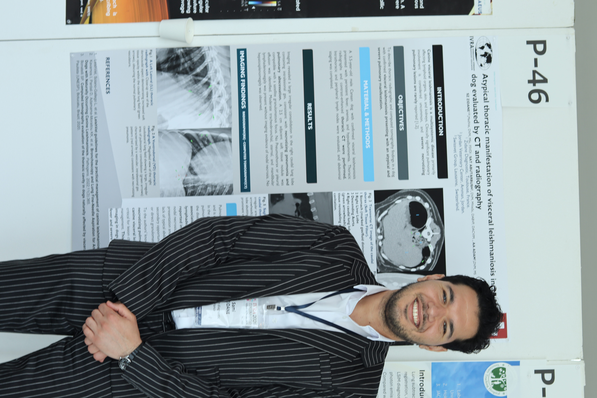

EAVDI-BID 2026 · Oral
Structured Thoracic Radiographic Scoring System
Selected among the top six oral abstracts.
Internationally trained veterinarian with advanced diagnostic imaging experience across small-animal and equine referral caseloads, research, teaching and cross-sectional imaging. Seeking advanced specialist training through an ACVR diagnostic imaging residency.
Approximate studies reported or performed as a clinician in veterinary radiology at VetAgro Sup Lyon and the National Veterinary School of Toulouse, with additional international teleradiology experience.
3,750–7,500 studies
Thoracic, abdominal, musculoskeletal and equine examinations.
3,750–5,600 studies
Abdominal, thoracic, musculoskeletal, ocular and interventional ultrasound.
370–940 studies
Small-animal and equine cross-sectional imaging.
190–560 studies
Neurologic and musculoskeletal MRI.
Representative areas of work demonstrating multimodality interpretation, cross-sectional imaging, quantitative assessment and clinically focused reporting.
Structured evaluation of intracranial and spinal disease using multiplanar MRI interpretation, lesion localization and differential prioritization.
Cross-sectional assessment of thoracic, abdominal, vascular and oncologic disease with multiplanar and 3D review.
Advanced imaging of the distal limb including osseous, articular and soft-tissue pathology.
Systematic sonographic assessment, lesion characterization, guided sampling and practical teaching.
Standardization of thoracic radiographic interpretation in dogs and cats using quantitative measurements and structured scoring.
Development of a structured cognitive decision-tree algorithm for veterinary ultrasonography: Acquire–Search–Characterise–Integrate–Differentiate–Check–Act.
CT-based 3D reconstruction, angular quantification, virtual correction and preoperative planning for angular limb deformity.
Structured postoperative radiographic assessment in dogs following femoral head and neck ostectomy, including reproducibility and functional outcome association.

Poster: Atypical thoracic manifestation of visceral leishmaniosis in a dog evaluated by CT and radiography.
This image documents active participation in an international diagnostic-imaging congress and links the scientific work directly to the academic presentation setting.
Selected among the top six oral abstracts.
Equine ocular ultrasonography.
CT arthrography and surgical decision support.
CT and radiography in a dog.
Ultrasound elastography and radiography.
Technical imaging development.
Equine musculoskeletal imaging and surgical management.
Oral presentation focused on equine pre-purchase examination and diagnostic imaging assessment.
Practical educational syllabus supporting systematic acquisition, anatomical recognition, interpretation and hands-on ultrasound training.
Contribution to educational material in equine clinical medicine and disease recognition.
Supervision of research in thoracic radiography, 3D orthopaedic planning and structured postoperative assessment.
Practical and theoretical small-animal ultrasonography training delivered with Mindray across the MENA region, with emphasis on systematic acquisition, abdominal anatomy, image interpretation and hands-on scanning.
Advanced diagnostic imaging case work, interpretation and teaching.
Advanced veterinary diagnostic imaging training across small- and large-animal patients.
Clinical veterinary training within a veterinary teaching hospital environment.
Veterinary medical education and advanced clinical training.
Selected work exploring how 3D visualization, quantitative imaging, structured interpretation and artificial intelligence can support veterinary diagnostic imaging while preserving specialist clinical reasoning.
MPR, MIP, volume rendering, segmentation, quantitative measurements, CT/MRI fusion, 3D planning and structured reporting.
Brain and spine segmentation, MRI/CT fusion, quantitative anatomy and safe corridor planning concepts.
My primary career objective is advanced specialist training through an ACVR diagnostic imaging residency within an academically rigorous environment combining high-volume clinical imaging, research, teaching and evidence-based practice.
I aim to contribute substantial multimodality clinical exposure, international academic experience, research activity and teaching experience while continuing to develop diagnostic accuracy, efficiency and scholarship under specialist supervision.
Clinical excellence remains the priority. Research, teaching and imaging innovation are complementary strengths supporting long-term development as a veterinary diagnostic imaging specialist.